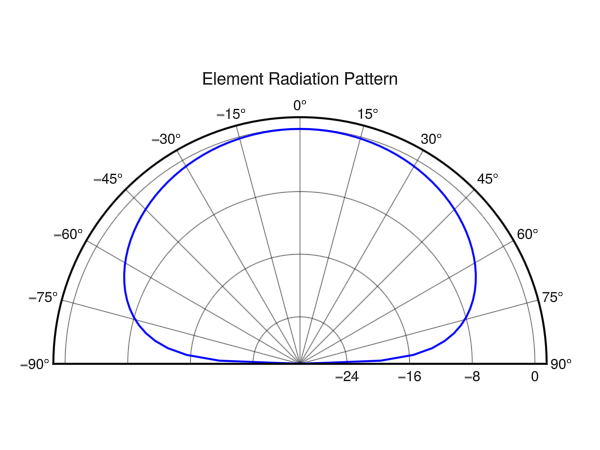
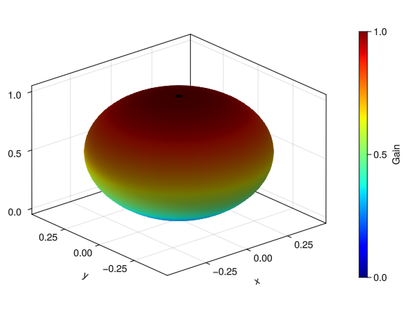

using GLMakie
using ArrayRadiation
angleRad = LinRange(π / 2, -π / 2, 81);
Ge = Kspace.cos_taper.(angleRad)
Ge_dB = DspUtility.pow2db(Ge)
y_lower_limit = -30 # dB
Ge_dB = clamp.(Ge_dB, y_lower_limit, Inf)
# Create figure and polar axis
f = Figure()
ax = PolarAxis(f[1, 1],
title = "Element Radiation Pattern",
thetalimits = (-pi/2, pi/2),
radius_at_origin = -30,
theta_0 = -pi/2,
direction = -1,
)
lines!(ax, angleRad, Ge_dB, color = :blue, linewidth = 2)
f
using GLMakie
using ArrayRadiation
# Coordinate space to be modeled
φs = range(0, 2π, length=361) # angle within xy-plane relative to +x
θs = range(0, π, length=181) # angle relative to +z
angles = [(φ,θ) for φ in φs, θ in θs]
# Our antennas gain as a function of elevation and azimuth angle.
Ge(θ,φ) = Kspace.cos_taper(θ)
# Get radius (the Element Gain) at each angle
rs = [Ge(θ, φ) for (φ,θ) in angles]
# Convert this data to a 2D mesh
spherical_mesh = [(r,φ,θ) for (r,(φ,θ)) in zip(rs,angles)]
# Convert spherical coordinates to rectangular coordinates
xs = [r*sin(θ)*cos(φ) for (r,φ,θ) in spherical_mesh]
ys = [r*sin(θ)*sin(φ) for (r,φ,θ) in spherical_mesh]
zs = [r*cos(θ) for (r,φ,θ) in spherical_mesh]
# Plot
fig = Figure()
ax = Axis3(fig[1,1])
plt = surface!(ax, xs, ys, zs,
color=rs,
colormap=:jet1
)
Colorbar(fig[1,2], plt, label="Gain")
fig
